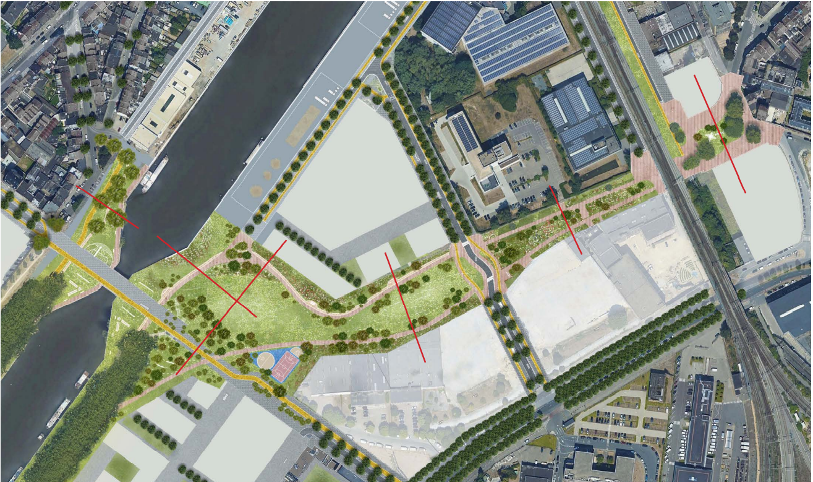
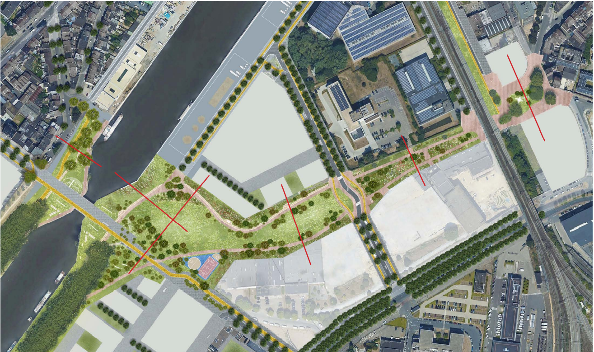

Toekomst
Pierre Marchant brug
Renders
Het Brussels Gewest stelde eind 2022 een project voor de Pierre Marchantbrug voor. Begin 2023 liep er een openbaar onderzoek en konden bewoners zich uitspreken over de nieuwe plannen. Deze tonen een brug die niet meer gebruikt wordt door auto’s, met centraal een fietspad in asfalt en langs beide kanten een houten dek voor de voetgangers. Er wordt ook melding gemaakt van banken, picknicktafels en tijdelijke elementen, dus de voorgestelde plannen lijken in de lijn van onze visie te liggen! We hebben een petitie aangemaakt om onze steun te tonen. Deze petitie werd door x personen ondertekend. Surlepont is een voorstander van dit project en reageerde schriftelijk en mondeling op de overlegcommissie van 16 februari 2023.
Openbare ruimte rond brug
 

Beliris zal alle openbare ruimten heraanleggen in de nieuwe Biestebroekwijk. U ziet twee visualisaties uit een voorstudie van Beliris van december 2021. De Grondelsstraat wordt een groene openbare ruimte, enkel nog toegankelijk voor voetgangers en fietsers, vanaf de Pierre Marchantbrug tot de spoorwegbrug. Ook het Grondelsplein net aan de andere kant van de spoorwegbrug wordt volledig autovrij.

Op 13 april 2022 organiseerde Filter Café Filtré Atelier, samen met BX1 en BRUZZ een stadsdebat op de brug. Herbekijk het debat hier.
Bekijk de krant hier